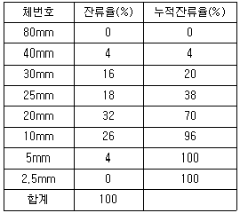
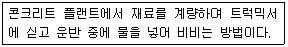
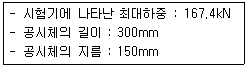
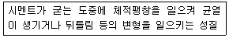
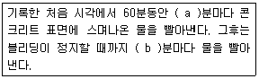

콘크리트기능사 (2015-01-25 기출문제)
1과목: 콘크리트재료
1. 시멘트의 비중 시험은 ( 1 )회 이상 실시하여 그 평균값의 차가 ( 2 ) 이내일 때의 평균값으로 비중을 취한다. 이때 (1)와 (2)의 값은 각각 얼마인가?
- (1)2 (2)0.03
- (1)2 (2)0.02
- (1)3 (2)0.01
- (1)3 (2)0.02
(정답률: 49%)

2. 콘크리트 압축강도 시험용 공시체 파괴 시험에서 공시체에 하중을 가하는 속도는 매초 얼마를 표준하는가?
- 0.60.4MPa
- 0.80.2MPa
- 0.⑤0.01MPa
- 10.⑤MPa
(정답률: 74%)
3. 다음 중 시멘트의 제조과정에서 응결지연제로 석고를 클링커 질량이 약 몇 %정도 넣고 분쇄하는가?
- 3%
- 6%
- 10%
- 16%
(정답률: 67%)
4. 경량 골재 콘크리트에 대한 설명 중 옳은 것은?
- 내구성이 보통 콘크리트보다 크다
- 열전도율은 보통 콘크리트보다 작다.
- 탄성계수는 보통 콘크리트의 2배 정도이다.
- 건조수축에 의한 변형이 생기지 않는다
(정답률: 42%)
5. 한중 콘크리트라 함은 일 평균기온이 몇 이하의 온도에서 치는 콘크리트를 말하는가?
- -4°C
- 4°C
- 0°C
- -2°C
(정답률: 87%)
6. 골재의 체가름 시험 결과가 다음과 같다 조립률은 얼마인가?

- 6.7
- 7.7
- 8.7
- 9.7
(정답률: 51%)
7. 슬럼프(slump) 시험 설명 중 옳지 않은 것은?
- 반죽질기를 측정하는 방법으로서 오래 전부터 여러 나라에서 많이 사용하여 왔다.
- 슬럼프 콘이 규격은 밑면 20cm, 윗면 10cm, 높이 30cm이다.
- 슬럼프 값을 측정할 때 콘을 벗기는 작업은 1분 30초 정도로 끝낸다.
- 3층으로 나누어 넣고 각 층마다 지름 16mm의 다짐대로 25회 다진다.
(정답률: 79%)
8. 다음 중 포졸란 작용이 있는 혼화재가 아닌 것은?
- 고로 슬래그
- 화산재
- 포리마
- 소성 점토
(정답률: 46%)
9. 감수제의 특징을 설명한 것 중 옳지 않은 것은?
- 시멘트 풀의 유동성을 증가시킨다
- 워커빌리티를 좋게 하고 단위 수량을 줄일 수 있다
- 콘크리트가 굳은 뒤에는 내구성이 커진다
- 수화작용이 느리고 강도가 감소된다
(정답률: 64%)
10. 콘크리트의 배합설계에서 재료의 계량 허용오차는 물에서는 얼마 정도인가?
- 1%
- 2%
- 3%
- 4%
(정답률: 68%)
11. 골재를 체가름 시험 후 조립률의 계산시 필요하지 않는 체는?
- 40mm
- 25mm
- 5mm
- 1.2mm
(정답률: 76%)
12. 다음 콘크리트 다짐 기계 중에서 비교적 두께가 얇고 넓은 콘크리트의 표면을 고르고 다듬질 할 때 사용되며 주로 도로 포장, 활주로 포장 등의 다짐에 쓰이는 것은?
- 거푸집 진동기
- 내부 진동기
- 표면 진동기
- 롤러 진동기
(정답률: 71%)
13. 가루 석탄을 연소시킬 때 굴뚝에서 집진기로 모은 아주 작은 입자의 재료로 워커빌리티가 좋아지게 만드는 혼화재료는?
- 포졸란
- 플라이 애시
- 공기연행제
- 분산제
(정답률: 84%)
14. 콘크리트 치기에 있어 먼저 친 콘크리트와 새로 친 콘크리트 사이에 이음이 생기는데 이 이음을 무엇이라고 하는가?
- 공사이음
- 시공이음
- 치기이음
- 압축이음
(정답률: 72%)
15. 시멘트의 종류에서 특수 시멘트에 속하는 것은?
- 고로 슬래그 시멘트
- 팽창 시멘트
- 플라이애시 시멘트
- 백색 포틀랜드 시멘트
(정답률: 70%)
16. 중량 골재에 속하지 않은 것은?
- 중정석
- 화산암
- 자철광
- 갈철광
(정답률: 79%)
17. 기상작용에 대한 골재의 내구성을 알기 위한 시험은 다음 중 어느 것인가?
- 골재의 밀도 시험
- 골재의 빈틈률 시험
- 골재의 안정성 시험
- 골재에 포함된 유기불순물 시험
(정답률: 80%)
18. 분말도가 큰 시멘트에 대한 설명으로 틀린 것은?
- 수밀한 콘크리트를 얻을 수 있으며 균열의 발생이 없다.
- 풍화되기 쉽고 수화열이 많이 발생한다
- 수화반응이 빨라지고 조기강도가 크다.
- 블리딩량이 적고 워커블한 콘크리트를 얻을 수 있다.
(정답률: 76%)
19. 콘크리트의 비비기에 대한 설명으로 틀린 것은?
- 비비기가 잘 되면 강도와 내구성이 커진다.
- 오래 비비면 비빌수록 워커빌리티가 좋아진다.
- 비비기는 미리 정해 둔 비비기 시간의 3배 이상 계속해서는 안 된다.
- 비비기를 시작하기 전에 미리 믹서 내부를 모르타르로 부착시켜야 한다.
(정답률: 73%)
20. 특정한 입도를 가진 굵은 골재를 거푸집에 채워 넣고, 그 공극 속에 특수한 모르타르를 적당한 압력으로 주입하여 제조한 콘크리트를 무엇이라 하는가?
- 프리스트레스트 콘크리트
- 숏크리트
- 트레미 콘크리트
- 프리플레이스트 콘크리트
(정답률: 69%)
2과목: 콘크리트시공
21. 콘크리트용 모래에 포함되어 있는 유기 불순물 시험에 사용하는 식별용 표준색용액의 제조방법으로 옳은 것은?
- 10%의 수산화나트륨 용액으로 2% 탄닌산 용액을 만들고, 그 2.5mL를 3%의 알코올 용액 97.mL에 가하여 유리병에 넣어 마개를 닫고 잘 흔든다.
- 10%의 알코올 용액으로 2% 탄닌산 용액을 만들고, 그 2.5mL를 3%의 수산화나트륨 용액 97.5mL에 가하여 유리병에 넣어 마개를 닫고 잘 흔든다.
- 3%의 알코올 용액으로 10% 탄닌산 용액을 만들고, 그 2.5mL를 2%의 황산나트륨 용액 97.5mL에 가하여 유리병에 넣어 마개를 닫고 잘 흔든다.
- 3%의 황산나트륨 용액으로 10% 탄닌산 용액을 만들고, 그 2.5mL를 2%의 알코올 용액 97.5mL에 가하여 유리병에 넣어 마개를 닫고 잘 흔든다.
(정답률: 64%)
22. 콘크리트 슬럼프 시험에서 슬럼프 값은 얼마의 정밀도로 측정하는가?
- 5mm
- 1mm
- 10mm
- 0.5mm
(정답률: 72%)
23. 잔골재의 밀도 및 흡수율시험에 사용되는 시험기구가 아닌 것은?
- 플라스크
- 원뿔형몰드
- 저울
- 원심분리기
(정답률: 66%)
24. 거푸집의 높이가 높을 경우 재료 분리를 막기 위하여 거푸집에 투입구를 만들거나, 슈트, 깔때기를 사용한다. 깔때기와 슈트 등의 배출구와 치기면과의 높이는 얼마 이하를 원칙으로 하는가?
- 0.5m 이하
- 1.0m 이하
- 1.5m 이하
- 2.0m 이하
(정답률: 70%)
25. 레디믹스트 콘크리트를 제조와 운반 방법에 따라 분류할 때 아래 표의 설명이 해당하는 것은?

- 센트럴 믹스트 콘크리트
- 슈링크 믹스트 콘크리트
- 가경식 믹스트 콘크리트
- 트랜싯 믹스트 콘크리트
(정답률: 74%)
26. 콘크리트의 건조를 방지하기 위하여 방수제를 표면에 바르든지 또는 이것을 뿜어 붙이기를 하여 습윤양생을 하는 것은?
- 전기양생
- 방수양생
- 증기양생
- 피막양생
(정답률: 61%)
27. 일반적인 수중콘크리트의 단위 시멘트량 표준은 얼마 이상인가?
- 370kg/m3
- 300kg/m3
- 250kg/m3
- 200kg/m3
(정답률: 76%)
28. 일반콘크리트에서 수밀성을 기준으로 물-결합제비를 정할 경우 그 값은 얼마를 기준으로 하는가?
- 30% 이하
- 45% 이하
- 50% 이하
- 60% 이하
(정답률: 86%)
29. 겉보기 공기량이 6.80%이고 골재의 수정계수가 1.20% 일 때 콘크리트의 공기량은 얼마인가?
- 5.60%
- 4.40%
- 3.20%
- 2.0%
(정답률: 77%)
30. 콘크리트의 인장강도 시험을 하여 아래 표와 같은 결과를 얻었다. 이 공시체의 쪼갬 인장강도는 얼마인가?

- 1.7MPa
- 2.0MPa
- 2.4MPa
- 2.7MPa
(정답률: 55%)
31. 단위 골재량의 절대부피가 0.7m3이고 잔골재율이 35%일 때 단위 굵은 골재량은? (단, 굵은 골재의 밀도는 2.6g/cm3임.)
- 1183kg
- 1198kg
- 1213kg
- 1228kg
(정답률: 55%)
32. 콘크리트의 블리딩 시험에서 시험온도로 옳은 것은?
- 17±3°C
- 20±3°C
- 23±3°C
- 25±3°C
(정답률: 82%)
33. 콘크리트에 사용하는 촉진제에 대한 설명으로 옳지 않은 것은?
- 프리플레이스트 콘크리트용 그라우트에 사용하여 부착을 좋게 한다.
- 시멘트의 수화작용을 빠르게 하여 응결이 빠르므로 숏크리트에 사용한다.
- 일반적으로 시멘트 무게의 1~2%의 염화칼슘을 사용하여 조기강도가 커지게 한다.
- 염화칼슘을 시멘트 무게의 4% 이상 사용하면 급속히 굳어질 염려가 있고 장기강도가 작아진다.
(정답률: 47%)
34. 아래의 표에서 설명하는 시멘트의 성질은?

- 응결
- 풍화
- 비표면적
- 안정성
(정답률: 42%)
35. 콘크리트에 사용되는 굵은골재 및 잔골재를 구분하는데 기준이 되는 체의 호칭치수는?
- 5mm
- 10mm
- 2.5mm
- 1.2mm
(정답률: 86%)
36. 보통 포틀랜드의 시멘트 분말도 규격에서 비표면적은 얼마 이상이어야 하는가?
- 2800cm2/g이상
- 3100cm2/g이상
- 3300cm2/g이상
- 3500cm2/g이상
(정답률: 52%)
37. 골재의 절대건조상태에 대한 정의로 옳은 것은?
- 골재를 80~90°C의 온도에서 3시간 이상 건조하여 골재알의 내부에 포함되어 있는 자유수가 완전히 제거된 상태
- 골재를 90~100°C의 온도에서 6시간 이상 건조하여 골재알의 내부에 포함되어 있는 자유수가 완전히 제거된 상태
- 골재를 110~120°C의 온도에서 24시간 이상 건조하여 골재알의 내부에 포함되어 있는 자유수가 완전히 제거된 상태
- 골재를 100~110°C의 온도에서 일정한 질량이 될 때까지 건조하여 골재알의 내부에 포함되어 있는 자유수가 완전히 제거된 상태
(정답률: 58%)
38. 한중 콘크리트의 시공에서 타설할 때의 콘크리트 온도는 어느 정도의 범위로 하여야 하는가?
- 0~5°C
- 5~20°C
- 20~30°C
- 30~35°C
(정답률: 62%)
39. 콘크리트의 압축강도를 시험할 경우 기둥의 측면 거푸집널의 해체시기로 옳은 것은?
- 콘크리트의 압축강도가 5MPa 이상
- 콘크리트의 압축강도가 4MPa 이상
- 콘크리트의 압축강도가 3MPa 이상
- 콘크리트의 압축강도가 2MPa 이상
(정답률: 53%)
40. 수송관 내의 콘크리트를 압축공기의 압력으로 보내는 것으로서, 주로 터널의 둘레 콘크리트에 사용되는 것은?
- 벨트 컨베이어
- 운반차
- 버킷
- 콘크리트 플레이서
(정답률: 77%)
3과목: 콘크리트 재료시험
41. 콘크리트 치기의 진동 다지기에 있어서 내부 진동기로 똑바로 찔러 넣어 진동기의 끝이 아래층 콘크리트 속으로 어느 정도 들어가야 하는가?
- 0.1m
- 0.2m
- 0.3m
- 0.4m
(정답률: 84%)
42. 공기연행(AE) 콘크리트의 알맞은 공기량은 굵은 골재의 최대치수에 따라 다르며 보통 콘크리트 부피의 몇 %를 표준으로 하는가?
- 1~3%
- 4~7%
- 7~12%
- 12~17%
(정답률: 66%)
43. 콘크리트 휨강도 시험용 공시체의 한 변의 길이는 콘크리트에 사용될 굵은 골재 최대치수의 몇 배 이상이며 또한 몇 mm 이상이어야 하는가?(오류 신고가 접수된 문제입니다. 반드시 정답과 해설을 확인하시기 바랍니다.)
- 2배, 50mm
- 3배, 80mm
- 4배, 100mm
- 5배, 150mm
(정답률: 41%)
44. 콘크리트의 블리딩 시험에 대한 아래 표의 설명에서( )에 들어갈 시간(분)으로 옳은 것은?

- a=40분, b=10분
- a=30분, b=10분
- a=10분, b=30분
- a=10분, b=60분
(정답률: 74%)
45. 콘크리트를 2층 이상으로 나누어 타설할 경우 외기온도 25°C 이하에서 이어치기 허용시간의 표준으로 옳은 것은?
- 1.0시간
- 1.5시간
- 2.0시간
- 2.5시간
(정답률: 37%)
46. 시멘트의 강도시험(KS L ISO 679)에서 모르타르를 조제할 때 시멘트와 표준모래의 질량에 의한 비율로 옳은 것은?
- 1:2
- 1:2.5
- 1:3
- 1:3.5
(정답률: 70%)
47. 굵은골재의 최대치수에 대한 설명 중 틀린 것은?
- 무근 콘크리트의 굵은골재 최대치수는 40mm이고, 이때 부재 최소치수의 1/4을 초과해서는 안 된다.
- 철근 콘크리트의 굵은골재 최대치수는 거푸집 양 측면 사이의 최소 거리의 1/5을 초과하지 않아야 한다.
- 일반적인 철근콘크리트 구조물인 경우 굵은골재 최대치수는 15mm를 표준으로 한다.
- 단면이 큰 철근콘크리트 구조물인 경우 굵은골재 최대치수는 40mm를 표준으로 한다
(정답률: 60%)
48. 콘크리트 타설에 대한 설명으로 틀린 것은?
- 한 구획 내의 콘크리트는 타설이 완료될 때까지 연속해서 타설해야 한다.
- 콘크리트는 그 표면이 한 구획 내에서는 거의 수평이 되도록 타설하는 것을 원칙으로 한다.
- 콘크리트 타설의 1층 높이는 다짐능력을 고려하여 이를 결정하여야 한다.
- 타설한 콘크리트는 그 수평을 맞추기 위하여 거푸집 안에서 횡방향으로 이동시키면서 작업하여야 한다.
(정답률: 80%)
49. 콘크리트의 혼화제에 대한 설명으로 가장 적합한 것은?(오류 신고가 접수된 문제입니다. 반드시 정답과 해설을 확인하시기 바랍니다.)
- 사용량이 시멘트 질량의 5% 정도 이상이 되어 그 자체의 부피가 콘크리트의 배합계산에 관계된다.
- 사용량이 콘크리트 질량의 1% 정도 이상이 되어 그 자체의 부피가 콘크리트의 배합계산에 관계된다.
- 사용량이 콘크리트 질량의 5%정도 이하인 것으로서 그 자체의 부피는 콘크리트의 배합계산에서 무시된다.
- 사용량이 시멘트 질량의 1% 정도 이하의 것으로서 그 자체의 부피는 콘크리트의 배합계산에서 무시된다.
(정답률: 68%)
50. 공극률이 25%인 골재의 실적률은?
- 12.5%
- 25%
- 50%
- 75%
(정답률: 81%)
51. 시멘트 비중 시험에서 광유 표면의 눈금을 읽을 때에 눈높이를 수평으로 하여 곡면(메니스커스)의 어디를 읽어야 하는가?
- 가장 윗면
- 중간면
- 가장 밑면
- 가장 윗면과 가장 밑면을 읽어 평균값을 취한다.
(정답률: 51%)
52. 한중콘크리트에 적합하고 조기강도가 필요한 공사나 긴급공사에 사용되는 시멘트는?
- 백색 포틀랜드 시멘트
- 조강 포틀랜드 시멘트
- 내황산염 포틀랜드 시멘트
- 중용열 포틀랜드 시멘트
(정답률: 76%)
53. 잔골재의 흡수율은 몇 % 이하를 기준으로 하는가?
- 2%
- 3%
- 5%
- 7%
(정답률: 53%)
54. 운반거리가 먼 경우나 슬럼프가 큰 콘크리트의 경우에 사용하는 애지테이터를 붙인 운반기계는?
- 덤프트럭
- 트럭 믹서
- 콘크리트 펌프
- 콘크리트 플레이서
(정답률: 67%)
55. 콘크리트 운반시공에 관한 설명 중 틀린 것은?
- 연직 슈트는 재료분리를 일으키기 쉬어 가능한 사용하지 않는 것이 좋다.
- 콘크리트 플레이서는 수송관을 수평 또는 상향으로 설치하고 압축공기로 콘크리트를 압송한다.
- 벨트 컨베이어는 운반거리가 길거나 경사가 있어서는 안 된다.
- 버킷은 믹서로부터 받아 즉시 콘크리트 칠 장소로 운반하기에 가장 좋은 방법이다.
(정답률: 52%)
56. 다음 중 콘크리트 압축강도 시험과 관련이 없는 것은?
- 캘리퍼스
- 다짐대
- 공시체 몰드
- 플라스크
(정답률: 55%)
57. 다음 중 골재의 실적률 계산에 이용되지 않는 것은?
- 골재의 밀도
- 골재의 단위용적질량
- 골재의 조립률
- 골재의 빈틈율
(정답률: 45%)
58. 굵은골재의 밀도시험 결과 2회 평균한 값의 측정범위의 한계는 0.01g/cm3이하이며 흡수율의 정밀도는?
- 0.01%
- 0.02%
- 0.03%
- 0.⑤%
(정답률: 34%)
59. 터널 내부에 라이닝 콘크리트를 타설하기 위하여 설치하는 이동식 철제 대형 거푸집은?
- 콘크리트 플레이서
- 슬립 폼
- 터널 지보재
- SCW(soil Cemet Wall)
(정답률: 47%)
60. 공기가 전혀 없는 것으로 계산한 시방배합의 콘크리트이론 단위무게와 실제 측정한 단위무게의 차이로 공기량을 측정하는 방법은?
- 면적법
- 부피법
- 질량법
- 공기실 압력법
(정답률: 37%)
즉, (1)은 시험을 실시한 최소 횟수를 나타내며, (2)는 시험 결과의 정확도를 나타냅니다.
따라서, (1)은 2이고 (2)는 0.03인 것입니다. 이는 시험을 2회 이상 실시하고, 그 평균값의 차가 0.03 이내일 때의 평균값으로 비중을 취하면 적절한 결과를 얻을 수 있다는 것을 의미합니다.
다른 보기들은 (1)과 (2)의 값이 다르기 때문에 정답이 될 수 없습니다.